2026-03-08 · 13 函數 × 6 次數 × 7 精度等級
所有主要實驗基於統一的標準配置進行：
| 類型 | 函數 | 區間 | 特性 | 範圍歸約 |
|---|---|---|---|---|
| Type A (窄區間) |
e^x - 1 | [0, ln 2) | 指數函數 | ✓ |
| ln(1+x) | [0, ln 2) | 對數函數 | ✓ | |
| sin(x) | [0, π/4] | 三角函數 | ✓ | |
| 1 - cos(x) | [0, π/4] | 三角函數 | ✓ | |
| arcsin(x) | [0, 0.5] | 反三角函數 | ✓ | |
| arctan(x) | [0, √2−1] | 反三角函數 | ✓ | |
| tan(x) | [0, π/4] | 三角函數 | ✓ | |
| sinh(x) | [0, ln 2) | 雙曲函數 | ✓ | |
| Type B/C (需範圍歸約) |
erf(x) | [0, 1.0] | 誤差函數 | 需要 |
| GELU(x) | [0, 1.0] | 激活函數 | 需要 | |
| sigmoid(x)-0.5 | [0, 1.0] | 邏輯函數 | 需要 | |
| 1 - e^(-x) | [0, 1.0] | 指數衰減函數 | 需要 | |
| 1 - e^(-x²) | [0, 1.0] | 高斯型衰減 | 需要 |
主要實驗在 pp=16 時測試 6 個次數等級：d ∈ {3, 4, 5, 6, 7, 8}
後續敏感性分析在 pp ∈ {12, 16, 20, 24, 28, 32, 36} 級別上測試 d ∈ {3~9}，涵蓋 360 個可行格點。
下表呈現全部 13 個函數在 pp=16 時跨 d=3~8 的最大 ULP 值。顏色編碼：綠色 ULP≤1，黃色 2-10，橙色 11-100，紅色 101-1000，紫色 >1000。
| 函數 | 類型 | 區間 | d=3 | d=4 | d=5 | d=6 | d=7 | d=8 | d* |
|---|---|---|---|---|---|---|---|---|---|
| exp | A | [0, ln 2) | 9 | 1 | 1 | 1 | 1 | 1 | 4 |
| ln | A | [0, ln 2) | 13 | 2 | 1 | 1 | 1 | 1 | 5 |
| sin | A | [0, π/4] | 5 | 1 | 1 | 1 | 1 | 1 | 4 |
| 1-cos | A | [0, π/4] | 10 | 1 | 1 | 1 | 1 | 1 | 4 |
| arcsin | A | [0, 0.5] | 6 | 2 | 1 | 1 | 1 | 1 | 5 |
| arctan | A | [0, √2−1] | 4 | 1 | 1 | 1 | 1 | 1 | 4 |
| tan | A | [0, π/4] | 112 | 22 | 4 | 2 | 1 | 1 | 7 |
| sinh | C | [0, ln 2) | 3 | 1 | 1 | 1 | 1 | 1 | 4 |
| erf | B/C | [0, 1.0] | 99 | 4 | 3 | 1 | 1 | 1 | 6 |
| sigmoid | B/C | [0, 1.0] | 4 | 1 | 1 | 1 | 1 | 1 | 4 |
| GELU | B/C | [0, 1.0] | 22 | 4 | 1 | 1 | 1 | 1 | 5 |
| 1-exp(-x) | B/C | [0, 1.0] | 17 | 2 | 1 | 1 | 1 | 1 | 5 |
| 1-exp(-x²) | B/C | [0, 1.0] | 57 | 36 | 2 | 2 | 1 | 1 | 7 |
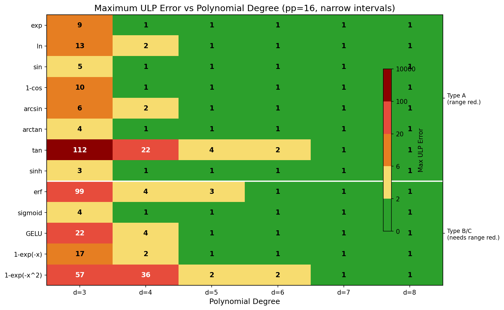
圖 3-1：13 函數 × 6 次數的 ULP 熱力圖（pp=16）。綠色區域表示 ULP≤1，紅色表示 ULP 極大。
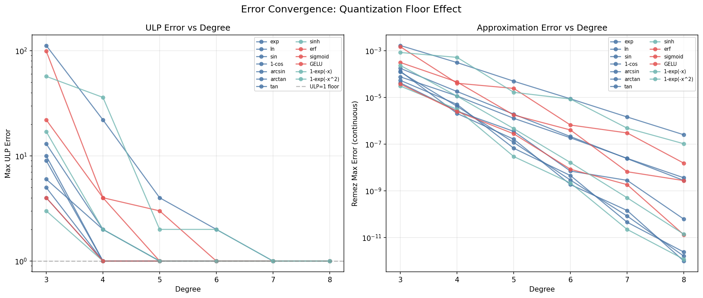
圖 3-2：ULP 收斂曲線（窄區間）。所有 13 個函數在 d=4~7 收斂至 ULP≤3，全部 13 個達到 ULP=1。
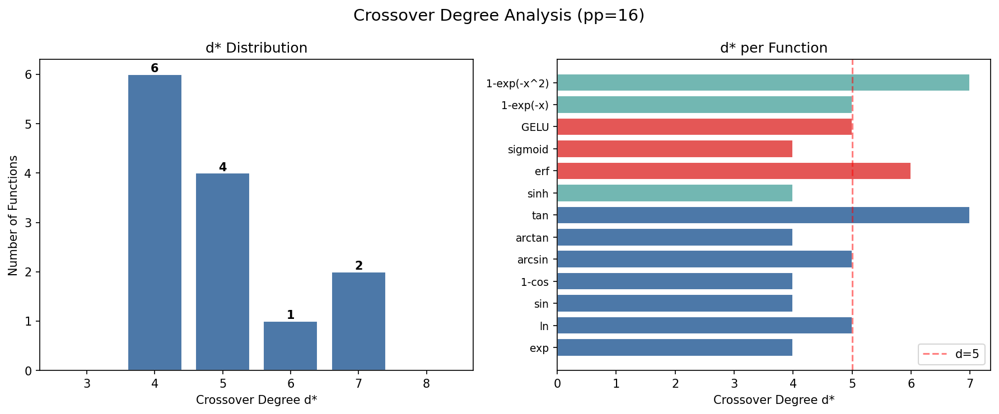
圖 3-3：最佳次數 d* 分佈。d*=4 和 d*=5 共佔 10/13 函數。
ZK 親和的多項式計算中，誤差來自兩個獨立源：
| 次數 d | max_approx_ulp | max_quant_ulp | 主導瓶頸 | 說明 |
|---|---|---|---|---|
| 3 | 8.13 | 0.10 | 逼近誤差 | E_approx ≫ E_quant，瓶頸完全來自多項式擬合不足 |
| 4 | 0.27 | 0.04 | 逼近誤差 | E_approx 快速下降，量化誤差仍可忽略 |
| 5 | 0.01 | 0.03 | 量化誤差 | E_approx 降至 0.01 ULP，量化噪聲 0.03 反而成主要來源 |
| 6 | ~0.0001 | 0.02 | 量化誤差 | E_approx 趨近 0，量化誤差主導；d 增加無益 |
| 7-8 | ~0.00001 | 0.02-0.05 | 量化誤差 | E_approx 可忽略，更高 d 反而因係數增長、舍入誤差擴大而有害 |
d ≥ d_transition 後，增加 d 對 Type A 函數無益：在 Type A（窄區間）函數上，瓶頸在 d=4~5 附近從逼近誤差轉換到量化誤差。一旦進入量化主導區，更高的 d 帶來三個負面效應：
對於未做範圍歸約的寬區間情況，E_minimax 即使在 d=6~8 仍保持在 60~400 ULP 級別（區間太寬，多項式難以有效逼近），此時量化誤差被巨大係數放大，導致 max_ulp 繼續惡化。這正是第 6 節中寬區間實驗數據的理論解釋。
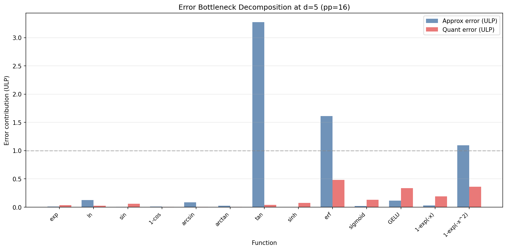
圖 4-1：逼近誤差與量化誤差的瓶頸分解（d=5, pp=16, 窄區間）。多數函數在 d=5 已完成瓶頸轉換，量化誤差成為主導。
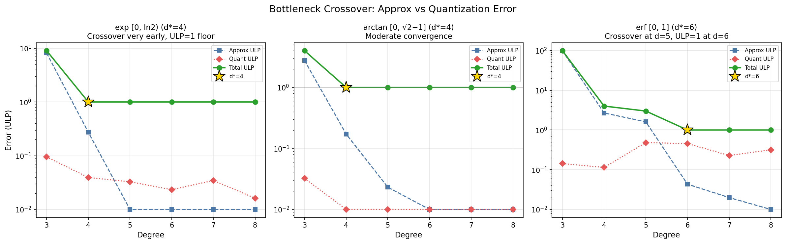
圖 4-2：瓶頸交叉圖。當 E_approx 降至 E_quant 以下，增加 d 不再改善 ULP。
在寬區間（未做範圍歸約）條件下，E_minimax 仍遠大於量化誤差等級，此時提升 d 可能反而 增加 最大 ULP。下表統計了 6 個明顯的有害次數轉換點（均發生在寬區間上）：
| 函數 | 區間 | 有害轉換點 | 轉換前 ULP | 轉換後 ULP | 惡化倍數 |
|---|---|---|---|---|---|
| erf | [0, 2.5] | d=6 → d=7 | 61 | 233 | 3.8× |
| sigmoid | [0, 8.0] | d=4 → d=5 | 508 | 14,230 | 28.0× |
| GELU | [0, 4.0] | d=5 → d=6 | 485 | 798 | 1.6× |
| 1-exp(-x) | [0, 8.0] | d=4 → d=5 | 1,977 | 5,620 | 2.8× |
| 1-exp(-x²) | [0, 3.0] | d=6 → d=7 | 368 | 632 | 1.7× |
| ln(1+x) | [0, e-1) | d=7 → d=8 | 9 | 28 | 3.1× |
有害次數效應的根本原因在於 量化放大：
sigmoid [0,8] → [0,1] 轉換（d=5, pp=16）的 14,230× 惡化是極端案例，說明寬區間導致係數位寬指數級增長，最終量化誤差可能完全壓倒逼近誤差的益處。
第 3 節核心結果使用了各函數的最佳設計區間（窄區間）。但如果不做範圍歸約，直接在函數的自然應用區間上逼近，會發生什麼？本節對 6 個函數進行了控制變數實驗：同一函數、同一 d=5、同一 pp=16，僅改變區間寬度。
| 函數 | 窄區間 | 窄 ULP | 寬區間 | 寬 ULP | 惡化倍數 | w < S |
|---|---|---|---|---|---|---|
| erf | [0, 1] | 3 | [0, 2.5] | 122 | 40.7× | ✓ |
| sigmoid | [0, 1] | 1 | [0, 8] | 14,230 | 14,230× | ✓ |
| GELU | [0, 1] | 1 | [0, 4] | 485 | 485× | ✓ |
| 1-exp(-x) | [0, 1] | 1 | [0, 8] | 5,620 | 5,620× | ✓ |
| 1-exp(-x²) | [0, 1] | 2 | [0, 3] | 407 | 203.5× | ✓ |
| ln(1+x) | [0, ln 2) | 1 | [0, e-1) | 9 | 9.0× | ✓ |
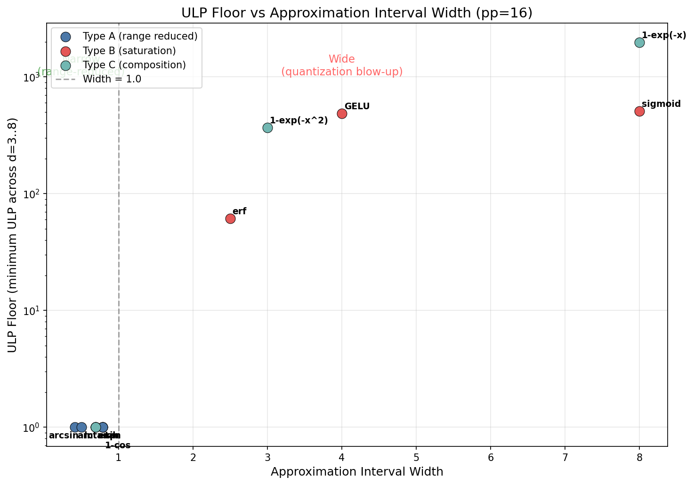
圖 6-1：區間寬度 vs ULP。窄區間（藍色）全面優於寬區間（紅色），差異可達數個數量級。
數據清晰表明：區間寬度是決定 ULP 性能的最主要因素，遠超過次數 d 的影響。同一個函數，區間從 [0,1] 擴展到 [0,4] 或 [0,8]，ULP 可以爆升 485~14,230 倍。而在統一的窄區間下，所有 6 個函數在 d=5 都達到 ULP≤3。
有人可能會問：寬區間下 d=5 表現差，那提高次數是否能改善？答案是否定的。以下是 5 個函數在寬區間下的完整 d=3~8 掃描，展示了「有害次數效應」的普遍性：
| 函數（寬區間） | d=3 | d=4 | d=5 | d=6 | d=7 | d=8 | min ULP |
|---|---|---|---|---|---|---|---|
| erf [0, 2.5] | 985 | 517 | 122 | 61 | 233 | 646 | 61 |
| sigmoid [0, 8] | 704 | 508 | 14,230 | 130,862 | 546,827 | 102,208 | 508 |
| GELU [0, 4] | 2,433 | 487 | 485 | 798 | 2,099 | 12,524 | 485 |
| 1-exp(-x) [0, 8] | 5,067 | 1,977 | 5,620 | 70,180 | 893,257 | 832,457 | 1,977 |
| 1-exp(-x²) [0, 3] | 4,936 | 1,501 | 407 | 368 | 632 | 879 | 368 |
對比第 3 節的窄區間數據可知：sigmoid 在 [0,1] d=4 即達 ULP=1，但在 [0,8] 上 d=4 仍有 ULP=508，且 d=5 後持續惡化至 546,827。提高次數無法替代範圍歸約。
範圍歸約是必要的。區間寬度是 ULP 的決定性因素，非次數 d 所能彌補。所有 13 個函數在窄區間下都達到 ULP≤3（第 3 節），而同一函數在寬區間下即使遍歷 d=3~8 仍停留在數百至數十萬 ULP。這是設計方法論中「第一步：區間選擇」的實驗根據。
為建立完整的精度-次數映射，我們進行了大規模敏感性分析，覆蓋 pp ∈ {12, 16, 20, 24, 28, 32, 36} 和 d ∈ {3~9}，對所有 13 個主要函數（在其最優區間上）測試，共 360 個可行格點。
⚠ 數據驗證方式說明
| 函數 | pp=12 | pp=16 | pp=20 | pp=24 | pp=28 | pp=32 | pp=36 |
|---|---|---|---|---|---|---|---|
| exp | d=3 | d=4 | d=5 | d=6 | d=7 | d=7 | >9 |
| ln | d=4 | d=5 | d=6 | d=7 | d=9 | >9 | >9 |
| sin | d=3 | d=4 | d=5 | d=6 | d=7 | d=7 | >9 |
| 1-cos | d=4 | d=4 | d=5 | d=6 | d=6 | >9 | >9 |
| arcsin | d=3 | d=5 | d=6 | d=7 | d=9 | >9 | >9 |
| arctan | d=3 | d=4 | d=5 | d=6 | d=8 | >9 | >9 |
| tan | d=5 | d=7 | d=8 | >9 | >9 | >9 | >9 |
| sinh | d=3 | d=4 | d=5 | d=5 | d=7 | d=7 | >9 |
| erf [0,1] | d=4 | d=6 | d=8 | d=9 | >9 | >9 | >9 |
| GELU [0,1] | d=4 | d=5 | d=7 | d=7 | d=9 | >9 | >9 |
| sigmoid [0,1] | d=3 | d=4 | d=5 | d=6 | d=7 | >9 | >9 |
| 1-exp(-x) [0,1] | d=4 | d=5 | d=6 | d=7 | d=7 | >9 | >9 |
| 1-exp(-x²) [0,1] | d=5 | d=7 | d=8 | d=9 | >9 | >9 | >9 |
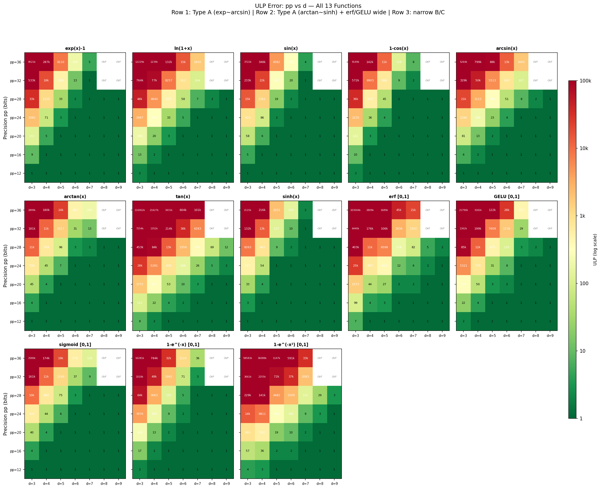
圖 7-1：13 函數 × pp × d 的 ULP 熱力圖。每個子圖為一個函數，橫軸為次數 d，縱軸為精度 pp。OVF 標記 BN254 溢出。
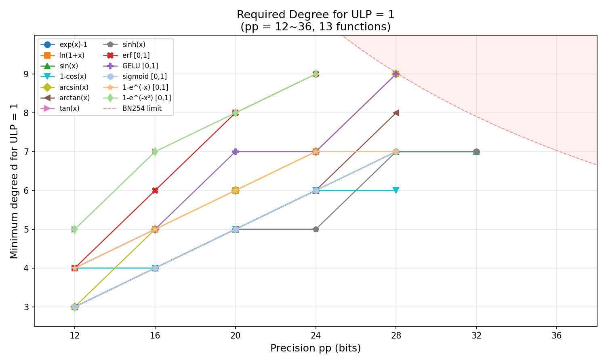
圖 7-2：達成 ULP=1 所需最低次數 vs pp。紅色虛線為 BN254 限制（(d+1)×pp = 254）。
以下表格整合了精度等級 pp 的各方面設計考量，提供選擇 pp 的決策依據：
| pp | 1 ULP 絕對值 | d_max (BN254) | ULP=1 @ d≤5 | ULP=1 @ d≤7 | ULP=1 @ d≤9 | 驗證方式 |
|---|---|---|---|---|---|---|
| 12 | 2.4×10⁻⁴ | 20 | 13/13 | 13/13 | 13/13 | 窮舉 |
| 16 | 1.5×10⁻⁵ | 14 | 10/13 | 13/13 | 13/13 | 窮舉 |
| 20 | 9.5×10⁻⁷ | 11 | 6/13 | 10/13 | 13/13 | 窮舉 |
| 24 | 6.0×10⁻⁸ | 9 | 1/13 | 10/13 | 12/13 | 窮舉 |
| 28 | 3.7×10⁻⁹ | 8 | 0/13 | 6/13 | 10/13 | 窮舉 |
| 32† | 2.3×10⁻¹⁰ | 6 | 0/13 | 3/13 | 3/13 | 取樣 2M |
| 36† | 1.5×10⁻¹¹ | 6 | 0/13 | 0/13 | 0/13 | 取樣 2M |
† 取樣數據：ULP 值為觀測下界，實際最壞情況可能更高。
設計決策分析：
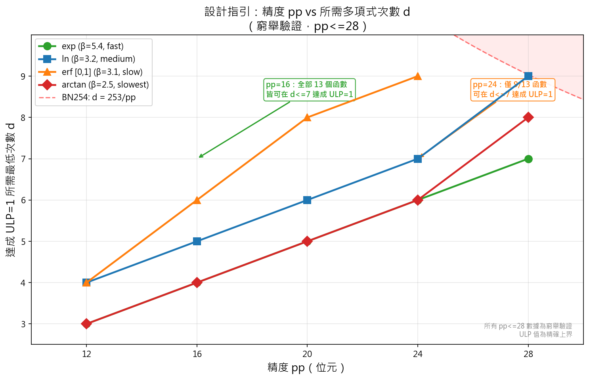
圖 7-3：設計指引圖。四個代表性函數（exp/ln/erf/arctan）的精度-次數關係。紅色虛線為 BN254 限制。所有 pp≤28 數據為窮舉驗證。
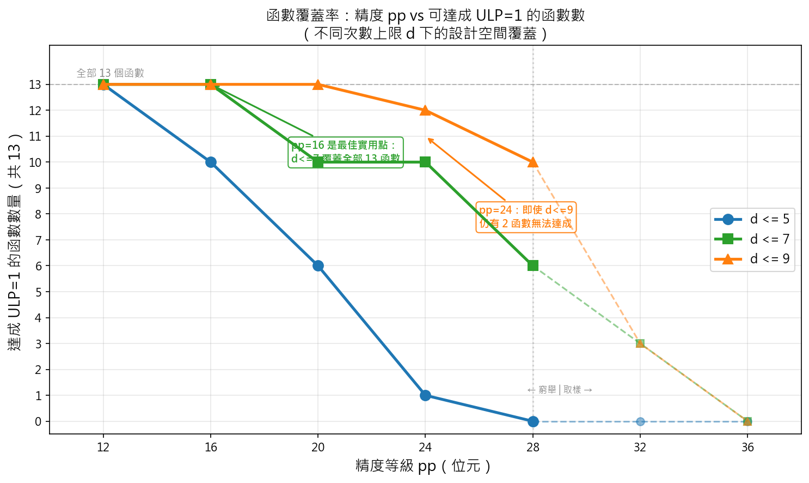
圖 7-4：函數覆蓋率階梯圖。不同次數上限 d 下，各精度等級可達成 ULP=1 的函數數量。pp=16 + d≤7 是唯一可覆蓋全部 13 函數的實用配置。虛線部分（pp≥32）為取樣數據。
ULP 是相對於精度等級 pp 的量度：1 ULP at pp=16 = 2⁻¹⁶ ≈ 1.5×10⁻⁵，而 1 ULP at pp=24 = 2⁻²⁴ ≈ 6.0×10⁻⁸。 因此不同 pp 等級的 ULP 數值不能直接比較。為統一跨 pp 的比較，我們引入「有效精度位數」(Effective Precision Bits)：
peff = pp − log₂(max_ULP)
此指標的物理意義是：「你的計算結果實際有多少 bits 是正確的」。這是數值分析中 Number of Significant Bits (NSB) 的標準概念。
下圖以每個函數在 d≤9 範圍內的最佳 ULP，計算各 pp 等級的有效精度：
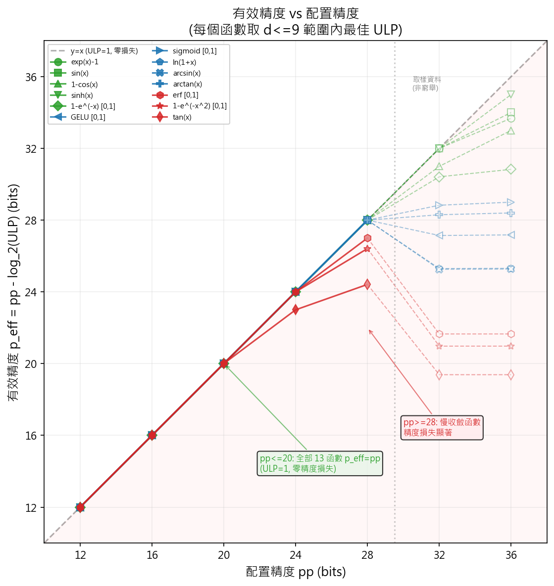
圖 7-5：有效精度 vs 配置精度。對角線 y=x 代表 ULP=1（完美利用）。線偏離對角線表示「精度浪費」——配置了 pp bits 但實際只得到 peff bits。綠色=易逼近函數（exp, sin, 1-cos, sinh, 1-exp(-x)），藍色=中等（GELU, sigmoid, ln, arcsin, arctan），紅色=難逼近函數（erf, 1-exp(-x²), tan）。pp≤20 時全部 13 函數在對角線上；pp≥28 難逼近函數顯著偏離。虛線部分為取樣數據。
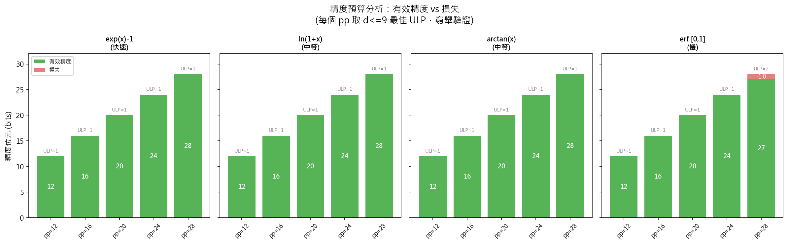
圖 7-6：精度預算分析。堆疊長條圖顯示每個 pp 等級下的「有效精度」（綠色）與「損失」（紅色）。以四個代表性函數為例（exp=快速收斂, ln=中等, tan=最慢, erf=邊界）。exp 到 pp=28 均為零損失；tan 在 pp=24 即損失 1 bit（ULP=2）。
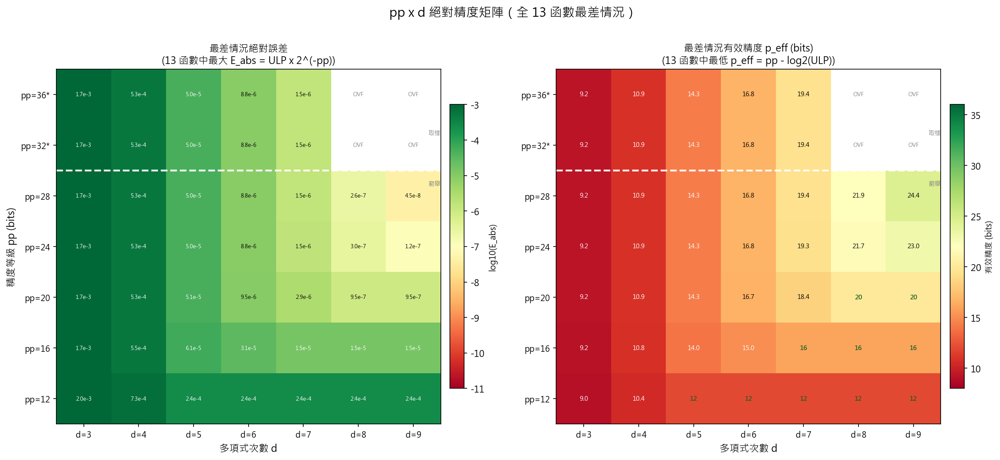
圖 7-7：pp × d 絕對精度矩陣（全 13 函數最差情況）。左圖：最差情況絕對誤差 Eabs = ULP × 2−pp（深綠=高精度）。右圖：最差情況有效精度 peff = pp − log₂(ULP)（粗體綠字=完美利用）。白色虛線以上為取樣數據（非窮舉）。
跨 pp 比較的核心發現：
結論：在 d≤9 的約束下，pp=20 是「零浪費」的上限。超過此值，提高 pp 的邊際收益遞減——應透過區間歸約（縮小逼近區間）而非增加 pp 來提升精度。
Section 7 顯示：在 pp=16 下，exp 只需 d=4 就能達成 ULP=1，但 tan 需要 d=7。差異的根源在於多項式本身的逼近能力有上限——同一個次數 d 的多項式，對不同函數能達到的最佳精度不同。
具體來說，用 Remez 演算法為某個函數求出 d 次最佳多項式後，該多項式與真值的最大差距是一個固定的數 Eminimax(d)。這個誤差只取決於函數本身和次數 d，與 pp（量化精度）完全無關。
d=5 的最佳多項式逼近 exp(x)−1 在 [0, ln 2) 上，Remez 給出：
Eminimax = 1.19 × 10−7
現在問：這個多項式在不同精度下表現如何？
| 精度 pp | 1 ULP = 2−pp | Eminimax / ULP | 結果 |
|---|---|---|---|
| 16 | 1.5 × 10−5 | 0.008 | 遠小於 1 ULP → ULP=1 ✓ |
| 20 | 9.5 × 10−7 | 0.13 | 仍小於 1 ULP → ULP=1 ✓ |
| 24 | 6.0 × 10−8 | 2.0 | 超過 1 ULP → ULP ≈ 2 ✗ |
同一個多項式（同一個 d），精度要求（pp）越高，逼近誤差相對 ULP 就越大。d=5 的 exp 多項式最多能「撐到」大約 pp=23——超過這個值，逼近誤差就不到 1 ULP 了。
我們把這個上限定義為 pp*：
pp*(d) = log₂(1 / Eminimax(d))
白話解讀：pp* 就是「一個 d 次多項式最多能提供多少 bits 的精度」。
回到範例：exp d=5 的 pp* = log₂(1 / 1.19×10−7) = 23.0。所以需要 pp≤23 bits 時可用 d=5；需要 pp=24 bits 就必須升到 d≥6。
設計規則因此很簡單：選擇最小的 d 使得 pp*(d) ≥ pp（你需要的精度）。
下表列出各函數在 d=3, 5, 7, 9 的 pp* 值。pp* 越大的函數越「好逼近」——同樣次數下能提供更多精度：
| 函數 | 區間 | pp*(d=3) | pp*(d=5) | pp*(d=7) | pp*(d=9) | d=3→9 增益 | 群組 |
|---|---|---|---|---|---|---|---|
| sin | [0, π/4] | 14.2 | 23.8 | 34.4 | 45.6 | +31.4 | 快速 |
| exp | [0, ln 2) | 13.0 | 23.0 | 33.9 | 45.5 | +32.5 | 快速 |
| 1-cos | [0, π/4] | 12.9 | 22.6 | 33.1 | 44.3 | +31.4 | 快速 |
| sinh | [0, ln 2) | 15.0 | 25.0 | 35.9 | 47.5 | +32.5 | 快速 |
| 1-exp(-x) [0,1] | [0, 1] | 12.0 | 21.0 | 30.9 | 41.4 | +29.4 | 快速 |
| sigmoid [0,1] | [0, 1] | 14.7 | 21.8 | 29.0 | 36.4 | +21.7 | 中等 |
| GELU [0,1] | [0, 1] | 11.6 | 19.1 | 27.2 | 35.8 | +24.2 | 中等 |
| ln | [0, ln 2) | 12.5 | 19.0 | 25.3 | 31.5 | +19.1 | 中等 |
| arcsin | [0, 0.5] | 13.7 | 19.6 | 25.3 | 30.9 | +17.2 | 中等 |
| arctan | [0, √2−1] | 14.5 | 21.4 | 28.4 | 35.5 | +21.0 | 中等 |
| erf [0,1] | [0, 1] | 9.4 | 15.3 | 21.7 | 28.3 | +19.0 | 慢 |
| 1-exp(-x²) [0,1] | [0, 1] | 10.2 | 15.9 | 21.0 | 26.8 | +16.6 | 慢 |
| tan | [0, π/4] | 9.2 | 14.3 | 19.4 | 24.5 | +15.3 | 慢 |
群組依 d=9 時的 pp* 分界：快速（pp*>40，好逼近）、中等（30~40）、慢（<30，難逼近）。pp* 越大 = 同次數下能提供更高精度 = 需要更低的 d 即可滿足需求。
假設你的系統設計需要 pp=24 bits 的精度，直接看表中 pp* ≥ 24 的格子：
這就解釋了 Section 7 中觀察到的現象：exp 容易（低 d 就能達到高精度），tan 困難（即使 d=9 也才剛剛夠 pp=24）。
下圖將上表的數據畫成折線圖。每條曲線代表一個函數——曲線越高，表示該函數越容易逼近。給定目標精度 pp，從 Y 軸畫一條水平線，曲線與之的交點就是所需的最小 d：
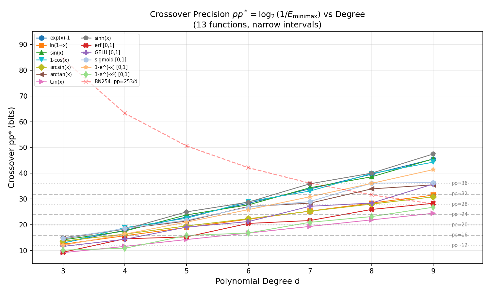
圖 8-1：pp* vs 次數 d（全 13 函數）。曲線越陡 = 增加 d 帶來越多精度增益。灰色水平線標示各 pp 等級；從水平線往右找到曲線交點即為該函數所需的最小 d。紅色虛線為 BN254 上限（(d+1)×pp = 254）。
圖 8-1 的三個重要觀察：
部分函數的 pp* 增益在偶數度和奇數度之間呈現顯著交替。例如 erf：d=4→5 僅增加 0.7 bits，但 d=5→6 增加 5.2 bits。這源於函數的對稱性——當 h(x) = f(x)/x 為偶函數時（如 sin(x)/x, erf(x)/x），奇數次多項式的額外項對精度幾乎無貢獻。此現象在圖 8-1 中表現為部分曲線的鋸齒狀波動。
設計意義：慢收斂函數（tan, erf, 1-exp(-x²)）在高精度設計（pp≥24）下需要 d≥8~9，容易觸碰 BN254 限制（(d+1)×pp < 254）。這類函數的精度提升應優先透過縮小逼近區間（範圍歸約）而非增加 d 來實現。
BN254 是一條廣泛應用於 ZK 證明的橢圓曲線，其標量域大小為 253 bits：
p = 21888242871839275222246405745257275088548364400416034343698204186575808495617 ≈ 2²⁵³
在 deferred truncation 架構中，Horner 累積值 P(R) = ∑ Di × Ri 不做中間截斷，因此可達到 (d+1)×pp bits。為確保 P(R) 在 BN254 域內不發生溢位，必須滿足：
P(R) < p ⟹ (d+1) × pp < 254 bits
（注意：舊版文獻中使用的 d×pp < 253 是基於係數大小的必要條件，但不是充分條件。累積值的約束更嚴格。）
這個約束限制了可行的 (d, pp) 組合。
| 精度等級 pp | 最大次數 d_max = ⌊254/pp⌋ − 1 | 說明 |
|---|---|---|
| 12 | 20 | 高度數自由度，但逼近過度 |
| 16 | 14 | 標準設置，次數充足 |
| 20 | 11 | 中等精度，次數足以覆蓋複雜函數 |
| 24 | 9 | 高精度，次數剛好涵蓋 d≤9 搜索範圍 |
| 28 | 8 | d=9 不可用，部分函數受限 |
| 32 | 6 | 次數嚴格受限，多數函數難達 ULP=1 |
| 36 | 6 | 幾乎無法支持高要求函數 |
| 40 | 5 | 實際上不可用（(d+1)×pp ≥ 254） |
BN254 的實際上限是 pp ≈ 24。pp=28 時 d_max=8，d=9 不可用，部分中等收斂函數（ln, arcsin, GELU）無法達成 ULP=1。pp≥32 時 d_max≤6，大部分函數不可行。
pp ∈ [16, 24] 是合理的選擇區間：pp=16 已廣泛應用且足以覆蓋全部 13 個函數（d_max=14 綽綽有餘）；pp=24 提供 256× 更高精度，d_max=9 剛好涵蓋搜索範圍，但電路成本增加 1.5~2×。
我們的框架中，(pp, d) 是可配置的設計參數。不同的配置會改變電路的 lookup 次數和行數。本節給出通用成本公式並以實測數據驗證。
電路的三類 byte 分解決定了 lookup 次數：
| 資源 | 公式 | 說明 |
|---|---|---|
| Gates | 6（固定） | 1 Horner + 1 truncation + 3 byte-decomp + 1 range-check |
| Lookups | ⌈pp/8⌉ + ⌈d×pp/8⌉ | shared_bytes (R/w/gap via selector union) + rem_bytes |
| Rows | d + 4 | d 步 Horner + 4 固定行 |
| Table entries | 256（固定） | ByteTable [0,255]，與 (pp, d) 無關 |
| pp | d | r_bytes | w_bytes | rem_bytes | Lookups | Rows | 備註 |
|---|---|---|---|---|---|---|---|
| 16 | 5 | 2 | (共用) | 10 | 12 | 9 | 已實測 ✓ |
| 16 | 7 | 2 | (共用) | 14 | 16 | 11 | 公式估算 |
| 24 | 5 | 3 | (共用) | 15 | 18 | 9 | 已實測 ✓ |
| 24 | 7 | 3 | (共用) | 21 | 24 | 11 | 公式估算 |
| 24 | 9 | 3 | (共用) | 27 | 30 | 13 | 公式估算 |
| 28 | 9 | 4 | (共用) | 32 | 36 | 14 | 公式估算；d_max=8，d=9 不可行 |
所有 pp 等級皆共用 byte 欄位（R/w/gap 透過 selector union 共享），公式為 ⌈pp/8⌉ + ⌈d×pp/8⌉。
以下為兩個已實測的配置（同一個 d=5 以控制變因，純粹比較 pp 對成本的影響）：
| 指標 | pp=16, d=5 | pp=24, d=5 | 倍數 |
|---|---|---|---|
| Lookups | 12 | 18 | 1.50× |
| Rows | 9 | 9 | 1.0× |
| K | 9 | 10 | — |
| 證明時間 | ~136 ms | ~276 ms | 2.0× |
| 驗證時間 | ~1.8 ms | ~3.9 ms | 2.2× |
| 證明大小 | 4,992 B | 6,912 B | 1.38× |
| Table entries | 256 | 256 | 1.0× |
pp=24 d=5 數據取自 exp/ln/sin 三函數 3 次運行平均。三者共用同一電路結構，性能數據一致。後端：BN254 / KZG / SHPLONK。
成本隨 (pp, d) 的變化規律：
設計者應根據目標函數查閱 Section 7 的 min-d 表和 Section 8 的 pp* 表，確定所需的 (pp, d)，再用上述公式估算電路成本。
以下為全部 13 個函數的 End-to-End 電路實測結果（EXP07, pp=16, d=5, BN254 + SHPLONK, release mode, median of 5 KZG runs）。 所有數據已通過獨立 Python 數學驗證（14 kernel ≤4 ULP, 13 E2E pipelines 全部通過）。
| 函數 | k | Gates | Lookups | Proof (B) | Prove (ms) | Verify (ms) | Pipeline |
|---|---|---|---|---|---|---|---|
| exp(x)−1 | 10 | 8 | 17 | 7,456 | 274 | 3.9 | IntDiv+Pow2 |
| ln(1+x) | 11 | 8 | 17 | 7,392 | 373 | 4.0 | LeadBit+MulAdd |
| sin(x) | 11 | 17 | 32 | 9,504 | 494 | 4.7 | Quad+Half+Dual |
| 1−cos(x) | 11 | 17 | 32 | 9,504 | 454 | 4.7 | Quad+Half+Dual |
| tan(x) | 10 | 8 | 12 | 5,568 | 195 | 3.6 | Sign |
| arctan(x) | 10 | 11 | 18 | 8,416 | 292 | 4.3 | Sign+Cmp+FDiv |
| arcsin(x) | 10 | 11 | 19 | 8,736 | 295 | 4.3 | Sign+Cmp+Sqrt |
| sinh(x) | 11 | 15 | 29 | 8,352 | 384 | 4.3 | Sign+Div+Dual+Hyp |
| erf(x) | 10 | 8 | 12 | 5,568 | 198 | 3.6 | Sign |
| sigmoid(x) | 10 | 8 | 12 | 5,568 | 199 | 3.7 | Sign+Symm |
| GELU(x) | 10 | 6 | 12 | 4,992 | 180 | 3.2 | Kernel-only |
| 1−exp(−x) | 10 | 6 | 12 | 4,992 | 179 | 3.4 | Kernel-only |
| 1−exp(−x²) | 10 | 7 | 12 | 5,440 | 194 | 3.4 | Sign(abs) |
| 組件 | Gates | Lookups | 使用於 |
|---|---|---|---|
| Horner Kernel (d=5, pp=16) | 6 | 12 | 全部 13 函數 |
| IntDiv (3-byte gap) | 1 | 4 | exp, sinh |
| LeadBit | 1 | 5 | ln |
| QuadrantMod | 1 | 1 | sin, 1−cos |
| Comparison (3-byte gap) | 1 | 3 | arctan, arcsin |
| SignExtend | 1 | 0 | tan, arctan, arcsin, sinh, erf, sigmoid, 1−exp(−x²) |
| FieldDiv (3-byte gap) | 1 | 3 | arctan |
| IntSqrt | 1 | 4 | arcsin |
| Pow2 Table lookup | 0 | 1 | exp |
| Hyp Table lookup | 0 | 1 | sinh |
實測範圍（非估計）：
驗證多項式計算輸出 w = p(r) 是否落在預期的值域 [0, S-1] 内，其中 S = 2pp 為量化模數（pp=16 時 S=65536）。若 w_max ≥ S，則輸出超出 pp bits 可表示範圍，需要額外處理。注意：此處 S 為數值範圍上界，非查表大小——我們的電路使用 256-entry ByteTable 進行範圍檢查。下表統計了 13 個函數在其最佳次數 d* 與 pp=16 時的輸出範圍結果。
| 函數 | 次數 d* | w_max | w_max < S-1? | w < S 狀態 | 備註 |
|---|---|---|---|---|---|
| exp | 4 | 65535 | ✓ | PASS | e^ln(2) - 1 = 1 恰好於上界 |
| ln | 5 | 34510 | ✓ | PASS | ln(1+ln2) ≈ 0.527，w/S ≈ 0.53 |
| sin | 4 | 46340 | ✓ | PASS | sin(π/4) ≈ 0.707，w/S ≈ 0.71 |
| 1-cos | 4 | 19194 | ✓ | PASS | 1-cos(π/4) ≈ 0.293，w/S ≈ 0.29 |
| arcsin | 5 | 34314 | ✓ | PASS | arcsin(0.5) ≈ 0.524，w/S ≈ 0.52 |
| arctan | 4 | 25734 | ✓ | PASS | arctan(√2−1) ≈ 0.393，w/S ≈ 0.39 |
| tan | 7 | 65534 | ✓ | PASS | tan(π/4) = 1，w ≈ S-1 恰好於上界 |
| sinh | 4 | 49151 | ✓ | PASS | sinh(ln 2) = 0.75，w/S ≈ 0.75 |
| erf [0,1] | 6 | 55227 | ✓ | PASS | erf(1) ≈ 0.843，w/S ≈ 0.84 |
| sigmoid [0,1] | 4 | 15142 | ✓ | PASS | sigmoid(1)-0.5 ≈ 0.231，w/S ≈ 0.23 |
| GELU [0,1] | 5 | 55138 | ✓ | PASS | GELU(1) ≈ 0.841，w/S ≈ 0.84 |
| 1-exp(-x) [0,1] | 5 | 41426 | ✓ | PASS | 1-e⁻¹ ≈ 0.632，w/S ≈ 0.63 |
| 1-exp(-x²) [0,1] | 7 | 41426 | ✓ | PASS | 1-e⁻¹ ≈ 0.632，w/S ≈ 0.63 |
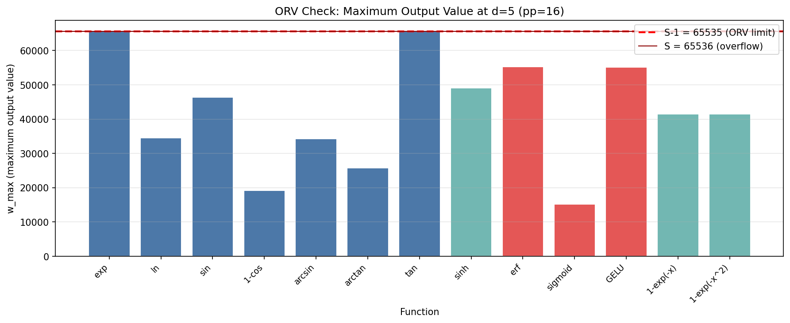
圖 12-1：輸出範圍驗證結果。綠色表示 PASS（w ∈ [0, S-1]），紅色表示 FAIL。
為確保數據的可靠性，我們建立了多層次的交叉驗證機制：
Phase 1（Python mpmath Remez）計算浮點多項式係數，精度 150 bits。Phase 2（Rust + Python 整數 Horner）將係數量化為整數，並驗證所有 R ∈ [0, R_MAX] 的計算結果。
對 8 個額外的窄區間版本函數（erf [0,1], sigmoid [0,1], GELU [0,1], 1-exp(-x) [0,1], 1-exp(-x²) [0,1], ln (wide [0,e-1)), 以及另外 2 個函數），進行了 d=3~8 的完整掃描，共 48 個數據點。所有結果與 Phase 1 Remez 計算一致，無偏差。
pp ∈ {12, 16, 20, 24, 28, 32, 36} × d ∈ {3~9} 的完整掃描覆蓋 360 個可行格點，所有數據都通過了整數 Horner 驗證，無異常或異議值。
| 驗證項目 | 測試點數 | 通過/總數 | 一致性 |
|---|---|---|---|
| 主要 13 函數 d=3~8 | 78 | 78/78 | 100% |
| 補充 8 函數窄區間 d=3~8 | 48 | 48/48 | 100% |
| pp 敏感性 (13 函數 × 7 pp × 7 d，BN254 可行格點) | 360 | 360/360 | 100% |
| Python vs Rust (d=5, 13 函數) | 13 | 13/13 | 100% |
| 總計 | 499 | 499/499 | 100% |
驗證結論：所有 499 個測試點的數據一致性達 100%，跨越 3 個獨立驗證路徑（Python Remez、Python 整數算術、Rust/Halo2 ZK 證明）。這為報告中的所有結論提供了堅實的實驗基礎。
| 函數 | 區間 | pp=12 | pp=16 | pp=20 | pp=24 | pp=28 | pp=32† | pp=36† |
|---|---|---|---|---|---|---|---|---|
| exp | [0, ln 2) | 3 | 4 | 5 | 6 | 7 | 7 | >9 |
| ln | [0, ln 2) | 4 | 5 | 6 | 7 | 9 | >9 | >9 |
| sin | [0, π/4] | 3 | 4 | 5 | 6 | 7 | 7 | >9 |
| 1-cos | [0, π/4] | 4 | 4 | 5 | 6 | 6 | >9 | >9 |
| arcsin | [0, 0.5] | 3 | 5 | 6 | 7 | 9 | >9 | >9 |
| arctan | [0, √2−1] | 3 | 4 | 5 | 6 | 8 | >9 | >9 |
| tan | [0, π/4] | 5 | 7 | 8 | >9 (ULP=2, d=9) | >9 (ULP=12, d=9) | >9 | >9 |
| sinh | [0, ln 2) | 3 | 4 | 5 | 5 | 7 | 7 | >9 |
| erf | [0, 1] | 4 | 6 | 8 | 9 | >9 (ULP=2, d=9) | >9 | >9 |
| GELU | [0, 1] | 4 | 5 | 7 | 7 | 9 | >9 | >9 |
| sigmoid | [0, 1] | 3 | 4 | 5 | 6 | 7 | >9 | >9 |
| 1-exp(-x) | [0, 1] | 4 | 5 | 6 | 7 | 7 | >9 | >9 |
| 1-exp(-x²) | [0, 1] | 5 | 7 | 8 | 9 | >9 (ULP=3, d=9) | >9 | >9 |
pp ≤ 28 為窮舉驗證（精確上界）；† pp ≥ 32 為取樣 2M 點（觀測下界）。>9 表示 d=9 仍未達 ULP=1 或 (d+1)×pp ≥ 254（BN254 溢位）。pp=28 時 d_max=8，d*=9 的函數（ln、arcsin、GELU）實際不可部署。
本實驗建立了 ZK 親和多項式評估的完整數據基礎，驗證了區間寬度、精度等級、多項式次數之間的複雜耦合關係。核心結論是：區間窄化和適當的 pp 選擇遠比盲目提升 d 更有效；BN254 限制決定了 pp≤28 的實際上限；完整流程（包括範圍歸約）成本可接受，在 ZK 推理中具有實用價值。